Blaise Pascal: French (1623–1662)
One of the greatest mathematicians of all time was Blaise Pascal, who was born in Clermont, Auvergne, France, on June 19, 1623. His father, Étienne Pascal, was a politician and a man of culture and intellectual distinction. Blaise Pascal’s mother died when he was four years old; thus, he was reared by his father, along with his two sisters. Encouraged by his father, his early years found him deeply engaged in religious thinking. This often distracted him from other intellectual endeavors. When Pascal was seven years old, Étienne moved to Paris with his three children. This was about the time when he was heavily involved in teaching his children at home. Pascal was not physically well conditioned, yet this was compensated for with an exceptionally brilliant mind. Étienne was impressed at how quickly his young son would pick up new ideas of what was then considered the classical education. He kept mathematics at a distance from him, so as not to put too much strain on the young child. Frankly, this built up Pascal’s curiosity about mathematics even more. Once the father realized his son’s incredible mathematics talents, he gave him a copy of Euclid’s Elements, perhaps one of the first compilations of geometry and other aspects of mathematics in a logical development. One of Pascal’s sisters claimed that her younger brother had discovered Euclid’s first thirty-two propositions in the same order that Euclid did, without referring to the book. It was the thirty-second proposition, that the sum of the angles of a triangle is equal to the sum of two right angles, that further demonstrated Pascal’s unique talent.
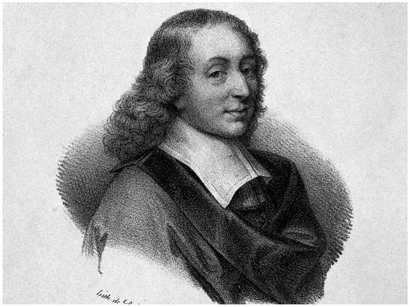
Figure 16.1. Blaise Pascal. (Lithograph after E. Edelinck after F. Quesnel Jr.)
By the age of fourteen, Pascal was admitted to the weekly meetings of a group that eventually developed into the French Academy of Science. About the time when he was sixteen years old, and having been motivated by the work of the French mathematician Girard Desargues (1591–1661), he got involved in geometry and proved some of the most beautiful theorems in the field, one of which today bears his name (Pascal’s theorem) and is very easy to demonstrate. All you need is a circle and a ruler. We demonstrate this theorem in figure 16.2, where we randomly select six points on a circle, then join these points consecutively, forming a hexagon inscribed in the circle. We then extend the three pairs of opposite sides (AB and ED; BC and FE; and CD and AF) so that they would intersect. (Of course, when you select your six points, avoid placing them such that you would have any pair of opposite sides parallel.) When we mark these points of intersection, L, N, and M, we find that these points will always lie on a straight line. Amazingly, this holds true for any six points on a circle (avoiding parallels, as mentioned above), and, curiously enough, it can also be extended to any six points on an ellipse. At first, other famous mathematicians of the times, such as René Descartes, refused to believe that such a discovery could be made by a sixteen-year-old boy. But, in time, it was properly accepted.
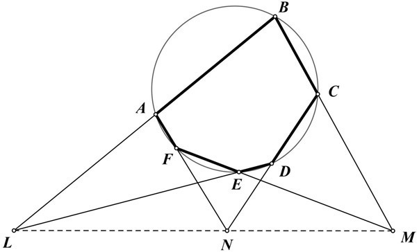
Figure 16.2.
Pascal had to pay a price for his brilliance. From the age of seventeen until the end of his life at age thirty-nine, he lived in physical pain, with sleepless nights and unpleasant days. Yet, he kept on working. At age nineteen, Pascal invented the first calculator machine (see fig. 16.3), in order to assist his father’s computational work as a tax collector for the city of Rouen. This calculator was able to do addition and subtraction and was referred to as Pascal’s calculator or Pascaline. There are currently four versions of this machine exhibited in the Musée des Arts et Métiers in Paris. At the time of its development, the machine was considered a luxury item and this motivated Pascal to continue to improve its functioning over the next 10 years.
The society in which he lived was tormented by religious upheaval, which to some extent affected Pascal as well, since his dear sister Jacqueline, who had supported him, entered a monastery in Pert-Royal. At age twenty-three, he suffered a temporary paralysis, but his intellectuality continued unabated. He continued to lead a rather turbulent life tortured by his family’s involvement in various religious followings. In 1654, at age thirty-one, Pascal engaged in probably the most important contribution he had made to mathematics. That is, he embarked on a mathematical correspondence with Pierre de Fermat, which eventually became the basis for the theory of probability. During the year 1654, Pascal and Fermat challenged each other with mathematical problems that began to generate the development of the future field of probability, as we know it today. One of the early problems that was posed involved a game in which two players would gain points, with a specified number of points to win the game. The question was as follows: If the game is stopped before the end, how should the money be divided between the two players, considering the number of points each player has at the time of stop of the game? Here is a translation of one of these correspondences, from Fermat to Pascal in 1654:
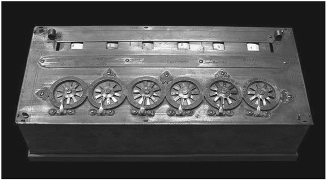
Figure 16.3. Pascal’s calculator. (Wikimedia Creative Commons, photo by Rama, licensed under CC BY-SA 3.0 FR.)
Monsieur. If I undertake to make a point with a single die in eight throws, and if we agree after the money is put at stake, that I shall not cast the first throw, it is necessary by my theory that I take
of the total sum to be impartial because of the aforesaid first throw. And if we agree after that I shall not play the second throw, I should, for my share, take the sixth of the remainder, that is,
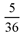
of the total. If, after that, we agree that I shall not play the third throw, I should, to recoup myself, takeof the remainder, which is
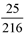
of the total. And if, subsequently, we agree again that I shall not cast the fourth throw, I should takeof the remainder, or
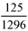
of the total, and I agree with you that that is the value of the fourth throw, supposing that one has already made the preceding plays. But you proposed in the last example in your letter (I quote your very terms) that if I undertake to find the six in eight throws, and, if I have thrown three times without getting it, and if my opponent proposes that I should not play the fourth time, and if he wishes me to be justly treated, it is proper that I have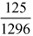
of the entire sum of our wagers. This, however, is not true by my theory. For in this case, the three first throws, having gained nothing for the player who holds the die, the total sum thus remaining at stake, he who holds the die and who agrees to not play his fourth throw should takeas his reward. And if he has played four throws without finding the desired point, and, if they agree that he shall not play the fifth time, he will, nevertheless, have
of the total for his share. Since the whole sum stays in play it not only follows from the theory, but it is indeed common sense that each throw should be of equal value. I urge you therefore (to write me) that I may know whether we agree in the theory, as I believe (we do), or whether we differ only in its application. I am, most heartily, etc.
Fermat
This written exchange led to the beginning of questioning the likelihood of certain occurrences involving cards, point flips, and the like. This is the very basic aspect of the field of probability.
Then there was Antoine Gombaud, the Chevalier de Méré (1607–1684), who was a French gambler whose claim to fame was correspondence with Pascal seeking help to understand why he was continuously losing at a game of dice. This motivated Pascal to correspond further with Pierre de Fermat, which generated a new field of mathematics and led to what we know today as probability theory.
Let’s take a look at what this exchange of ideas entailed. De Méré was involved with two games of dice. The first game involves making a bet with even odds on getting at least one six on four successive rolls of the die. He knew that the likelihood of getting a six on one roll was
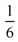
He then figured that on four rolls of the die, the probability would be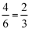
This, of course, was incorrect. This didn’t stop him from betting, and yet he seemed rather successful.He extended his thinking by betting with even odds on getting at least a double six on 24 rolls of a pair of dice. Figuring, correctly, the chance of getting a double six on one roll of the pair of dice is
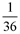
once again he mistakenly assumed that getting the double six on 24 rolls of the pair of dice would be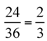
Since he began to lose a lot of money, he decided to seek help from his brilliant friend, Pascal. This further strengthened the correspondence between Pascal and Fermat, which ultimately led to a solution to the problem.
Let’s take a look at the two games and see why the first game was profitable and the second game was not. Clearly, we know that when we roll the die there are six possible ways that it can land, which allows us to conclude that the probability of getting a six is  and the probability of not getting a six is
and the probability of not getting a six is
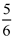
Therefore, considering de Méré’s first game, we calculate that the probability of getting no six in four rolls of the die is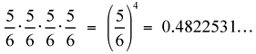
It follows that the probability of getting at least one six on these four rolls is 1 – 0.4822531 . . . = 0.5177469 . . . . We can interpret this for 100 games with approximately 52 successful rolls. Were he to play 1,000 games, he would win an average of 518 games. Winning more than half the games gave him an edge.
Now considering the second game, we recall that there were 36 possible outcomes when tossing two dice, of which only one was a double six. This gives us a probability of getting the double six as
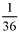
; the probability of not getting a double six is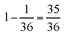
Therefore, the probability of not getting a double six on 24 rolls of the pair of dice is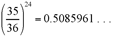
. As before, we can conclude that the probability of getting at least one double six on the 24 rolls of the pair of dice is 1 – 0.5085961 . . . = 0.4914039 . . . . This indicates that de Méré would win only approximately 49 out of 100 games, which gives his opponent an edge, winning 51 out of 100 games. Problems of this sort were solved in the exchange between Pascal and Fermat, which led to what we know today as probability theory.Throughout this time, Pascal made considerable use of the triangular arrangement of numbers that also bears his name today. In figure 16.4, we see this arrangement, where, beginning at the top, we have a 1, followed by a second row of two 1s; then, each succeeding row begins and ends with a 1, with each other number between the 1s being the sum of the two numbers diagonally above it on either side. This pattern then continues downward. Today, this arrangement of numbers is known as the Pascal triangle. Many number arrangements can be found on the Pascal triangle. For example, the sum of the numbers in each row is a power of 2, as shown in the right margin of figure 16.4.
When we look at figure 16.5, we also notice that, considered as numbers, we have a representation of powers of 11. This triangular arrangement of numbers is very helpful, to this day, when working with probability.
There are probably countless patterns that can be found on the Pascal triangle; however, one that surprises us most is the appearance of the Fibonacci numbers, which can be seen in figure 16.6.
It could be said that Pascal’s name in today’s recollection of the history of mathematics is being a co-inventor of the theory of probability, which seems to become increasingly more important in our everyday lives, from weather prediction to work in finance. On August 19, 1662, tortured with physical maladies and unpleasant mental conditions, Pascal’s life came to an end in Paris, when he suffered convulsions and died at age thirty-nine.
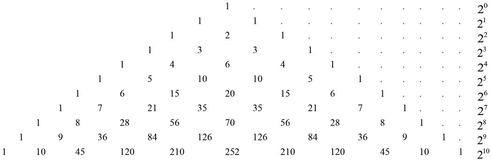
Figure 16.4.
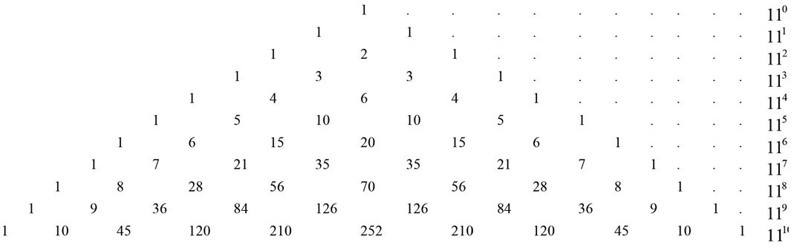
Figure 16.5.
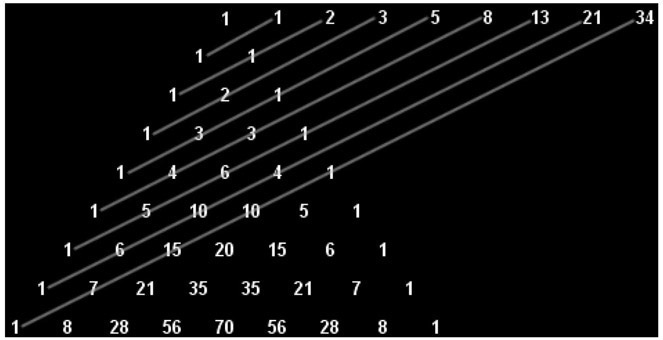
Figure 16.6.